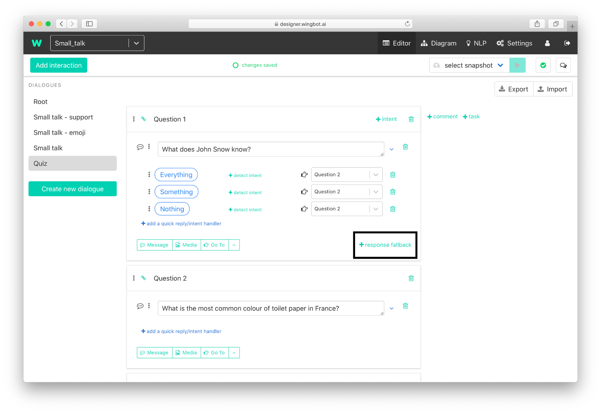

Force user to answer the question
You can ignore the user's question (or other non-acceptable response) and ask politely him again.

- Click on “+ response fallback” on the interaction with the question.

- Politely ask again for the answer and add responses too.

Add a snippet, which will keep context of interaction.
a. Add snippet

b. Move the empty snippet to the top of the fallback and select one of snippets:
- “Keep user in this interaction (use it as a fallback)” - to keep fallback.
“Keep previous NLP handlers and fallback (repeatedly)” to keep fallback and NLP handlers.

You can find more about context snippets here.
Take look how contexts works here.